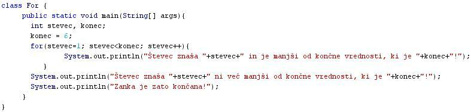
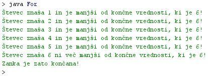

ZANKA FOR
- Stavek "for" omogoèa ponavljanje stavka ali bloka ukazov.
- Tudi stavek "for" je torej zanka.
- Zanka "for" se razlikuje od zank "while" in "do-while" v tem, da je število ponovitev izvajanja te zanke vnaprej znano in doloèeno.
- Število ponovitev zank "while" in "do-while" je odvisno od tega, ali je postavljeni pogoj v teh dveh zankah izpolnjen.
- Izpolnitev pogoja je odvisna od razliènih dejavnikov, ki jih v èasu pisanja programa ne moremo predvideti in so lahko ob vsakem teku programa drugaèni.
- Število ponovitev izvajanja zanke "for" je vnaprej znano in doloèeno s tremi parametri, ki jih vsebuje ta stavek.
- Primer:
for (izraz za zaèetno vrednost števca; pogoj za konec zanke; inkrement) {
stavek1;
stavek2;
stavek3;
stavek4;
}
- V primeru zgoraj vidimo, da zanka "for" nima postavljenega pogoja kot zanki "while" in "do-while".
- Namesto pogoja ima tri parametre: zaèetno vrednost števca; konèno vrednost števca in inkrement.
- Število ponovitev znake "for" je odvisno od teh treh vrednosti števca.
- Ob prvem izvajanju zanke "for" ima števec zaèetno vrednost.
- Ob zadnjem izvajanju zanke "for" ima pogoj za konec znake vrednost "false", je pa vezan na velikost števca.
- Ob vsakem novem izvajanju zanke "for" se števcu poveèa vrednost za 1 (inkrement) ali zmanjša za 1 (dekrement).
- Število ponovitev zanke "for" je doloèeno z zaèetno in konèno vrednostjo števca.
VAJA 24:
- V okolju za pisanje izvorne kode v jeziku Java, za prevajanje in za interaktivno delo zapiši zgornji program "For". Pomagaj si s sliko.
- Kodo lahko tudi kopiraš iz te datoteke in jo prilepiš v okolje, v katerem pišeš programèke. Pozor: koda, ki jo boš kopiral/a, vsebuje eno, dve, tri ali štiri napake. Èe želiš, da bo program deloval, moraš napake odkriti in jih odpraviti.
- Izvorno kodo shrani pod imenom "ImePriimek24.java". ImePriimek je seveda tvoje lastno ime in priimek.
- Datoteko "ImePriimek24.java" prevedi.
- Prevedeno datoteko zaženi, preveri rezultat v interaktivnem oknu in poklièi profesorja, da vidi rezultat.
1. Vprašanja:
1. Kakšna struktura je stavek "for"?
2. Kaj omogoèa stavek "for"?
3. V èem se stavek "for" razlikuje od stavkov "while" in "do-while"?
4. Naštej tri parametre, ki doloèajo delovanje stavka "for".
5. Kaj pomeni beseda "inkrement"?
6. Kaj pomeni beseda "dekrement"?
7. S èim je doloèeno število ponovitev zanke?
8. Zapiši spremenljivke, ki smo jih deklarirali v primeru te uène enote.
9. Kolikokrat se je izvedla zanka v primeru te uène enote?
10. Koliko znaša konèna vrednost števca zanke v tej uèni enoti?
2. Zapiši od ene do pet kljuènih besed, ki povzemajo vsebino te uène enote.
3. Povezave do dodatnih informacij.
Gradiva na spletnih straneh fakultete za matematiko in fiziko v Ljubljani.
Spletni priroènik proizvajalca programskega okolja Java. To je podjetje Sun.
|